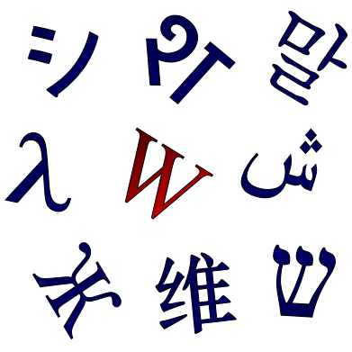

تامینکننده گسکت صنعتی پروژهای
پیشرو تجهیز فرتاک بهعنوان تامینکننده گسکت صنعتی، گسکتها را بر اساس فشار، دما و سیال سرویس از سازندگان معتبر تامین میکند. انتخاب گسکت ناسازگار با Facing فلنج، عامل اصلی نشتی در تست هیدرواستاتیک و راهاندازی است.
گسکتهای صنعتی قابل تامین
گسکتهای فلزی و نیمهفلزی
- گسکت اسپیرال واند: با پرکننده گرافیت و PTFE
- گسکت رینگ جوینت (RTJ): بیضی و هشتضلعی
- گسکت کمرپروفایل: با روکش گرافیت
- گسکت جکتدار (Jacketed): برای مبدلهای حرارتی
ورقهای آببندی
- ورق گرافیت خالص: برای دماهای بالا
- ورق PTFE: برای سیالات خورنده
- ورق فیبری غیرآزبستی: برای کاربردهای عمومی
متعلقات
- گسکت عایق (Isolation Kit): برای حفاظت کاتدی
- اورینگ و قطعات آببندی: لاستیکی و Viton
- گسکتهای استاندارد ASME B16.20
برندهای قابل سورسینگ




چرا پیشرو تجهیز فرتاک؟
- انتخاب بر اساس سرویس: فشار، دما و سیال.
- متریال متنوع: گرافیت، PTFE و فلز.
- گواهی سازنده: مستندات قابل ارائه.
- انطباق Vendor List: برندهای تاییدشده.
صنایع تحت پوشش
نفت و گاز
آببندی خطوط فرایندی
پتروشیمی
آببندی مبدل و راکتور
نیروگاهی
آببندی خطوط بخار
فولاد
آببندی تاسیسات
مقایسه انواع گسکت — جدول انتخاب بر اساس شرایط سرویس
| نوع گسکت | دما/فشار | سیال مناسب | Facing فلنج |
|---|---|---|---|
| اسپیرال واند (گرافیت) | تا ۴۵۰°C | بخار، هیدروکربن | RF |
| اسپیرال واند (PTFE) | تا ۲۵۰°C | سیالات خورنده | RF |
| رینگ جوینت (RTJ) | فشار قوی | نفت و گاز | RTJ |
| کمرپروفایل | تا ۵۰۰°C | مبدلهای حرارتی | RF |
| ورق غیرآزبستی | تا ۲۰۰°C | آب، عمومی | FF/RF |
نکته فنی: گسکت باید با نوع Facing فلنج (RF/FF/RTJ) و کلاس فشار هماهنگ باشد. گسکت RTJ روی فلنج RF قابل استفاده نیست و بالعکس.
عوامل انتخاب گسکت
- سیال: گرافیت برای هیدروکربن، PTFE برای اسید و سیالات خورنده.
- دما و فشار: تعیینکننده متریال پرکننده و بدنه گسکت.
- کلاس فلنج: گسکت باید برای کلاس فشار فلنج طراحی شده باشد.
- استاندارد: ASME B16.20 برای گسکتهای فلنجی.
راهنماهای مرتبط
پرسشهای متداول
تامینکننده گسکت چه مدارکی ارائه میدهد؟
گواهی سازنده، دیتاشیت متریال و در صورت درخواست گواهی TPI همراه هر محموله تحویل داده میشود.
گسکت اسپیرال واند برای چه کاربردهایی مناسب است؟
برای فلنجهای با Facing نوع RF در فشار و دمای متغیر، با پرکننده گرافیت یا PTFE بسته به سیال.
آیا گسکت RTJ تامین میشود؟
بله، گسکت رینگ جوینت بیضی و هشتضلعی برای فلنجهای RTJ در کلاسهای فشار بالا تامین میشود.
حداقل سفارش گسکت چقدر است؟
برای گسکتهای استاندارد حداقل سفارش اجباری وجود ندارد و تامین تناژ پروژهای امکانپذیر است.
استعلام گسکت صنعتی
نوع گسکت، ابعاد، متریال و شرایط سرویس (فشار/دما/سیال) را ثبت کنید تا کارشناسان ما پیشنهاد فنی ارائه دهند.
ثبت استعلام هوشمند (RFQ) ←